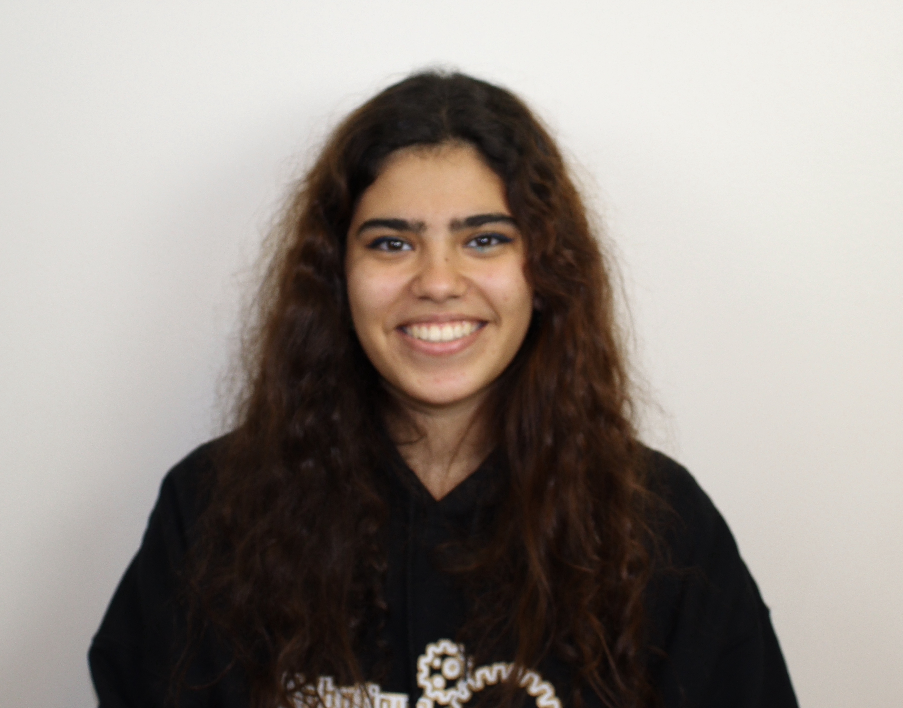
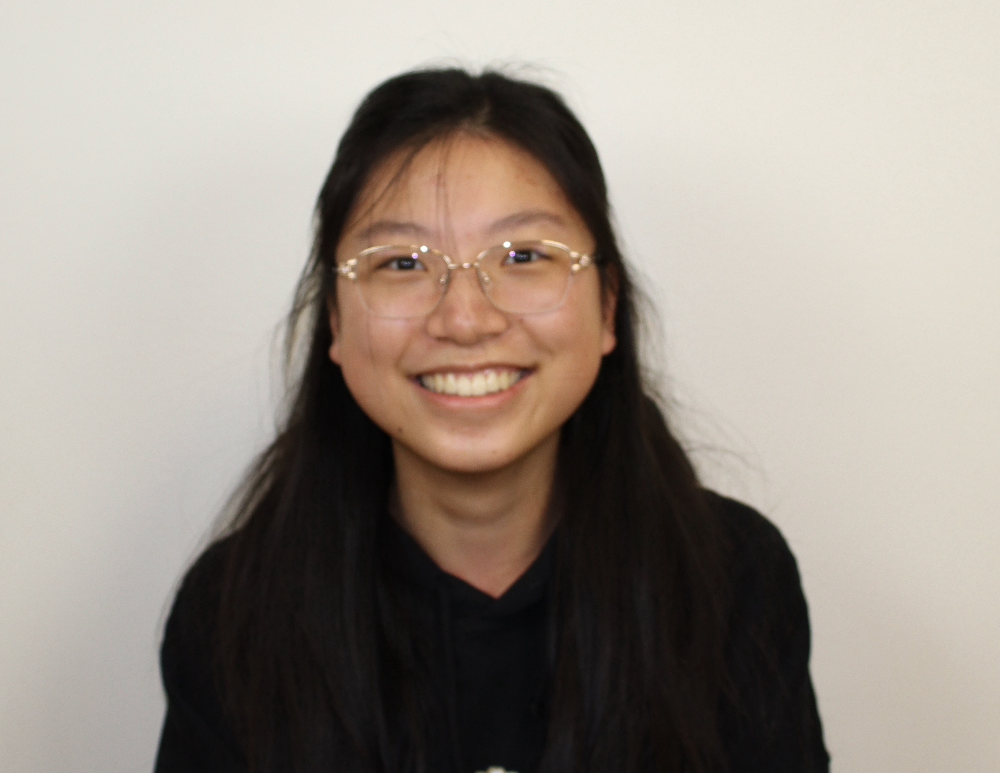

JOURNALISME + VIDÉO

Nom: Camille Jean-Franĉois
ID: 89034

La robotique m’a fait découvrir plusieurs nouveaux champs d'intérêts. Elle a déverrouillé ma créativité lorsque je travaillais sur le site web. J’ai découvert de nouveaux passe-temps ainsi qu’une nouvelle opportunité de carrière.
JOURNALISME + VIDÉO

Nom: Emily Hoang
ID: 87356
La robotique m’a permis de développer mes capacités. C’était une belle expérience qui m’a aidée à appliquer ma créativité dans plusieurs contextes différents.
JOURNALISME + VIDÉO

Nom: Catherine Louca
ID: 83574
Cette expérience m’a appris que personne ne peut jamais manger trop de pizza. Je me suis fait tellement de nouvelles amies et mes meilleurs souvenirs se sont produits lorsque nous travaillions à l’école le samedi.
CONCEPTION WEB + VIDÉO

Nom: Victoria Hoang
ID: 96382
Même si c’est difficile, j’ai eu la chance d’apprendre tellement de nouvelles choses et de rencontrer de nouvelles personnes.
CONCEPTION WEB + VIDÉO

Nom: Sadushaa Velautham
ID: 94627
J’ai beaucoup aimé l’ambiance de l’environnement de travail.
CONCEPTION WEB + VIDÉO

Nom: Maria Kiremitci
ID: 93827
J’ai appris à être patiente lorsque les choses ne fonctionnent pas comme je le veux.
CONCEPTION WEB + VIDÉO

Nom: Mia Ortaaslan
ID: 94682
J’ai appris à organiser et à gérer différents projets.
VIDÉO

Nom: Violetta Moutzouridis
ID: 79829
J’ai appris à ne pas prendre pour acquis le temps alloué pour travailler.
VIDÉO

Nom: Alexia Cangul
ID: 79237
J’ai adoré être amie avec des personnes que je ne connaissais pas. J’ai passé tellement de temps avec mes coéquipières et j’ai adoré apprendre à les connaître.
VIDÉO

Nom: Sabrina Vu
ID: 78493
J’ai appris à être plus positive et à bien travailler avec mes coéquipières.
ROBOT

Nom: Theresa Khoury
ID: 60939
La robotique m’a aidée à gérer mon temps.
ROBOT

Nom: Youanna Wissa
ID: 63829
«Regarde...»
J’ai appris les différents types de vis, de roues ainsi que l’animation. J’ai aussi appris à utiliser les machines et que le rangement est important.
ROBOT

Nom: Gulraaj Kaur
ID: 63928
«Je sais pas»
Gérer mon temps était super stressant, mais ça, c’est quelque chose que j’ai pratiqué. J’ai beaucoup appris et je suis très heureuse d’avoir vécu cette expérience.
ROBOT

Nom: Melina Farahdel
ID: 62934
C’était une expérience très amusante et j’ai vraiment adoré me faire de nouveaux amis.
PROGRAMMATION
Nom: Melody Soliman
ID: 39028
J’ai appris à colorier sur le portable d’Eugenia.
PROGRAMMATION
Nom: Eugenia Sun
ID: 38928
Nous avons appris qu’analyser les codes ensemble nous a grandement aidées à les comprendre et comment différents processus de pensée peuvent tous conduire à la solution, même si les méthodes sont différentes.
3D

Nom: Sabrina Cimpan
ID: 29943
C’est une expérience très amusante.
3D

Nom: Carol Hanna
ID: 27493
J’ai appris à être un peu plus organisée et à bien effectuer mon travail en peu de temps. J’ai adoré voir le résultat final de tout mon travail, c’est fascinant de voir tous les progrès du travail sur lequel on travaille depuis des mois.
MENTOR

Nom: Joseph El-Helou
ID: 19837